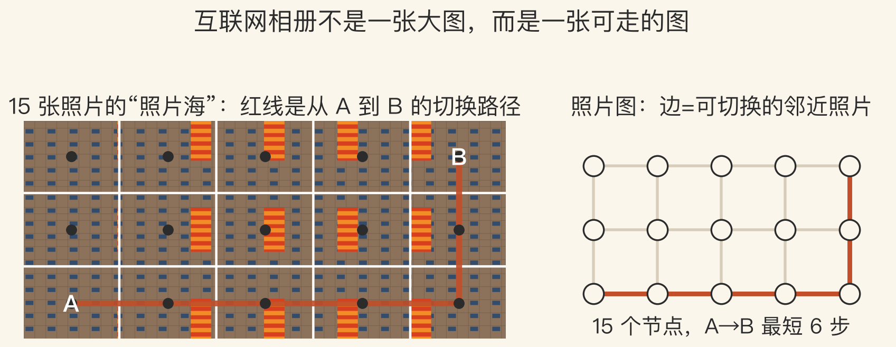
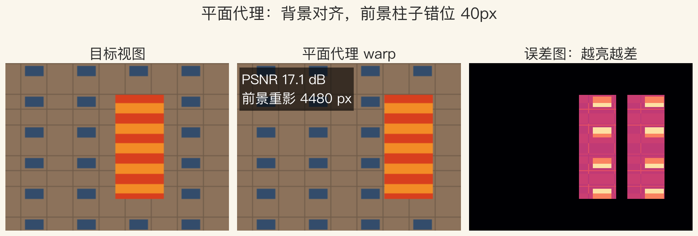
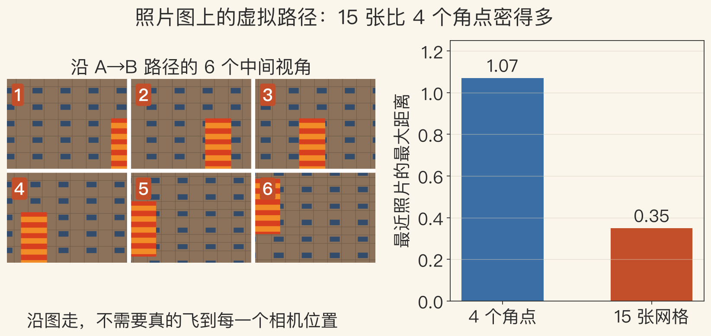

第 14 章 · 照片漫游
上千张游客照，能走进去吗
- 网上有成千上万张游客照。
- 不用重新建模，直接在照片之间走。
- 每张照片有位置和姿态，邻近照片连边。
- 本集用 15 张合成照片做最小演示。
依据：原书第 867–868 页
两个系统
Photo Tourism：在照片之间导航
Photosynth：平面代理与过渡
本集不是完整 Photo Tourism
基础 · SfM
照片从哪拍：SfM 位姿
- SfM 求每台相机的三维位置和姿态。
- 再配一个稀疏三维点云。
- 位姿是照片图和虚拟路径的基础。
- 本集直接给定 5×3 相机网格，不跑 SfM。
依据：原书第 867 页
两个输出
相机位姿：每张照片从哪拍
稀疏点云：场景的大致形状
没有位姿，照片只是散图
基础 · 3D 代理
每幅图配一个 3D 代理
- 代理是每张照片的简化几何。
- 主导平面常常比三角网格更稳。
- 网格容易冒出错误的连接和面片。
- 可信区用深度图，不可信区用点云。
依据：原书第 867 页
主导平面
便宜、稳定，不会突然长面
一个平面管不了前后两个深度
前景一近就会错位
导航 · 标注
怎么在照片之间走
- 从俯视图选相机，跳到邻近视角。
- 也可以点相关的缩略图。
- 在图上选兴趣区域，看想看的部分。
- 标注可以自动传播到别的照片。
依据：原书第 867–868 页
导航方式
俯视图：给全局
缩略图：给细节
兴趣区域：看这扇窗
实验一 · 照片图
看图：相册是一张可走的图
- 左边 15 张照片，红线是 A→B 路径。
- 右边照片图，边表示可以切换。
- 15 个节点全连通，最短 6 步。
- 每一步最大距离 0.5。
依据：本集实验

15 张照片墙 + 照片图 A→B 路径｜程序生成，未用教材或论文原图
伪影 · 稳定轴
翻页与稳定轴
- 平面代理切换时会出现“翻页”感。
- 过渡不真实，像把卡片翻过去。
- 给所有平面选一个稳定的 3D 轴。
- 稳定轴减少游动，不能消除重影。
依据：原书第 868 页
优缺点
简单、稳定、便宜
前景视差会滑、会重影
后转向深度、分层、神经渲染
实验二 · 平面代理
看图：背景对齐，前景错位
- 平面代理整图 PSNR 17.05 分贝。
- 背景平面内区 PSNR 45.0 分贝。
- 前景柱子错位 40 像素，MSE 0.0733。
- 重影 4,480 像素，误差图有两条柱子。
依据：本集实验

目标 / 平面代理 / 误差图，前景重影 4,480px｜程序生成，未用教材或论文原图
虚拟路径 · Photo Tours
从照片图到虚拟路径
- 自动检测多视角物体，生成环绕视角。
- 邻近照片连成 virtual path。
- 可以在任意两张照片之间走。
- 后来成为 Google Maps 的 Photo Tours。
依据：原书第 868 页
三个词
orbit：绕物体一圈
virtual path：两点路线
Photo Tours：自动铺路
实验三 · 密度与覆盖
看图：照片越密，路越顺
- 左边是 A→B 的 6 个中间视角。
- 4 个角点最大最近距离 1.070。
- 15 张网格是 0.349。
- 密度收益 3.07 倍。
依据：本集实验

A→B 路径 6 个中间视角 + 4 角点 vs 15 网格覆盖｜程序生成，未用教材或论文原图
视频漫游 · sea of images
从照片到视频漫游
- 相机穿过环境，视频回放成 walkthrough。
- 四向观看，最好用全景视频相机。
- 二维水平面铺网格，采成 sea of images。
- 也可沿预设路径走，像博物馆导览。
依据：原书第 896 页
两条路
sea of images：密网格
预设路径：省数据、限自由
源头可追到 Aspen MovieMap
拼接 · 曝光 · 定位
视频漫游的三件事
- Ladybug 用六路同步视频拼 360 度全景。
- 相机中心不共点，重叠区有视差鬼影。
- 用多视角平面扫描逐列估深度。
- 曝光包围、运动补偿、地图对齐。
依据：原书第 896–898 页
三个问题
拼接：视差鬼影
曝光：窗户和强阴影
定位：map correlation
收束 · 下一集
位姿、代理、路径
- SfM 位姿加稀疏点云，把照片变成图。
- 平面代理便宜稳定，但前景会翻页、重影。
- 照片越密、路径越顺，漫游越连续。
- 下一集：生成模型的 IBR。
依据：原书第 867–868、896–898 页
三个词
位姿：照片在哪拍
代理：每张图的简化几何
路径：照片之间怎么走